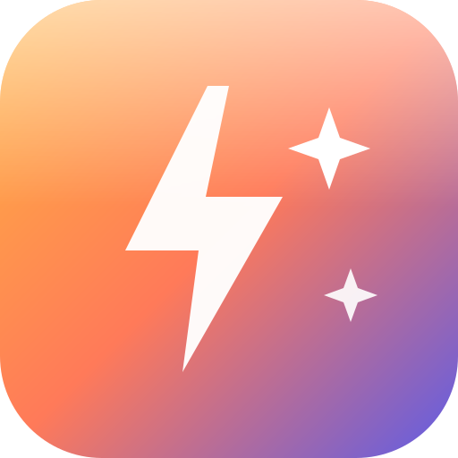

중학교 과학 · Ⅶ 전기와 자기 · Ⅷ 별과 우주
수업 중 화면에 띄워 두면 학생들이 모바일 버전으로 바로 들어올 수 있어요.
틀리면 고른 답에 맞춘 피드백을 보여 주고 한 번 더 풀 기회를 줘요.
기초 · 표준 · 심화 해설과 핵심 개념 카드로 스스로 정리해요.
시간을 재며 풀고 채점 → 성취수준 → 틀린 문제만 재시험.
기록은 각 기기의 브라우저에만 저장되며 서버로 보내지 않아요.